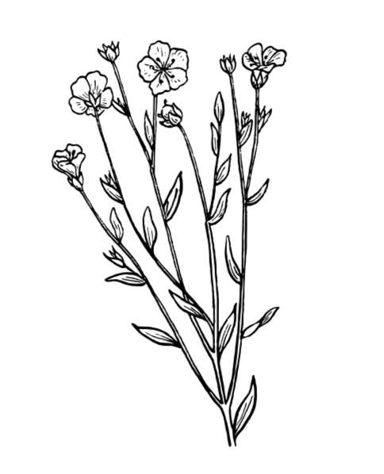

"En tant que sophrologue-relaxologue, je vous permets de retrouver bien-être au quotidien par des soins adaptés et un accompagnement personnalisé. Si vous le souhaitez, je peux me déplacer à votre domicile. Ayant suivi une formation sur les fleurs du Dr Bach, je peux vous conseiller sur leurs bienfaits. Veuillez me contacter pour convenir d'un rendez-vous."
La sophrologie est une pratique psycho-corporelle qui favorise un bon équilibre entre le corps, le mental et les émotions. Elle combine des techniques de relaxation, de respiration et de visualisation positive. Elle est particulièrement recommandée en gestion du stress et pour la détente.
Prestations
- Gestion du stress
- Gestion de la douleur
- Trouble de la concentration
- Anxiété
- Trouble du sommeil
- Phobies
- Accompagnement pour traverser le deuil
- Trouble alimentaire
- Conseils de nutritions
- Combattre les addictions
- Préparation aux examens
Les Fleurs de Bach
Les Fleurs de Bach sont des élixirs issus des fleurs, permettant de soulager à la fois les maux physiques et spirituels et ce, sans effets néfastes ou secondaires.